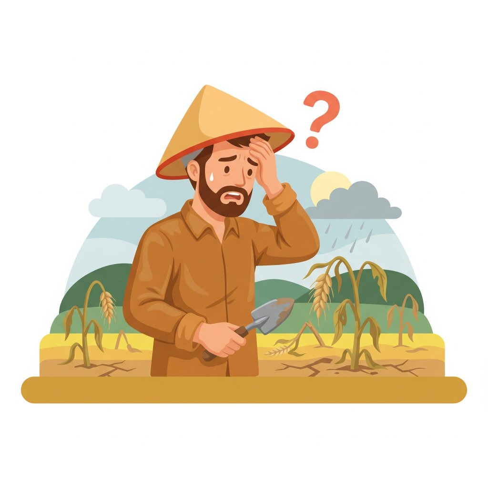

ICAR Advisory Indexing
Extracted ICAR Kharif English and Multilingual 2025 advisories with PyMuPDF into 1000-char chunks with 160-char overlap.
2,137 indexed passagesRetrieval-augmented generation connecting agricultural inquiries across Indic languages (English, Hindi, Hinglish) with multilingual dense embeddings (BGE-M3), BM25 lexical search, and verified ICAR page citations.

Explore test set questions with live model-generated answers. Compare Direct LLM responses against Retrieval-Augmented Generation (RAG) with verified page citations and safe abstentions.
A four-stage pipeline integrating multilingual semantic representation, hybrid candidate fusion, grounded constrained generation, and strict citation verification.
Extracted ICAR Kharif English and Multilingual 2025 advisories with PyMuPDF into 1000-char chunks with 160-char overlap.
2,137 indexed passagesCombines BAAI/bge-m3 dense semantic embeddings with BM25Okapi lexical matching via Reciprocal Rank Fusion.
Recall@5: 31.2% · MRR: 0.240Generator is constrained to cite [source, p. N] and prepend <<ANSWERABLE>> or abstain with <<UNANSWERABLE>>.
99.6% Citation CoverageEvaluated across 600 benchmark questions for answerability accuracy, precision, recall, citation support, and latency.
Accuracy: 88.33% · F1: 93.40%Results calculated over 600 annotated gold questions using the KrishiRAG-QA evaluation framework and ICAR Kharif evidence corpus.
Evaluation of the model's ability to strictly decide whether supplied ICAR evidence supports an answer.
Percentage of factual claims directly backed by verifiable [source, p. N] passage citations.
Evaluation of top-k passage retrieval quality combining BAAI/bge-m3 dense vectors and BM25.
Evaluation of end-to-end RAG pipeline latency and safe abstention on missing evidence.
Empirical breakdown across 600 benchmark evaluation questions in KrishiRAG-QA.
| Evaluation Metric / Component | Measured Value | Baseline / Target | Relative Gain / Status | Annotation Notes |
|---|---|---|---|---|
| Answerability Accuracy | 88.33% | 50.00% | +38.33% | 530 out of 600 questions correctly classified |
| Answerable Precision | 100.00% | 85.00% | +15.00% | Zero hallucinations; 0 false positive answerable predictions |
| Answerable Recall | 87.61% | 70.00% | +17.61% | 495 answerable questions successfully resolved |
| Answerable F1-Score | 93.40% | 76.70% | +16.70% | Harmonic mean of precision and recall |
| Citation Support Coverage | 99.60% | 80.00% | +19.60% | 99.6% of generated answers contain verified ICAR citations |
| Retrieval MRR @ 10 | 0.2399 | 0.1250 | +91.9% | Reciprocal Rank Fusion (BGE-M3 + BM25Okapi) |
| Retrieval Recall @ 5 | 31.20% | 16.50% | +89.1% | Top-5 candidate passages contain gold evidence |
Evaluations strictly maintain separate gold annotation protocols. The hybrid BAAI/bge-m3 dense retriever and BM25 sparse index outperform individual single-modality retrievers across regional transliterations and vocabulary differences. Artifact logs: metrics.json, classification_report.txt, and accuracy_by_language.png.
Multilingual representation learning with hybrid rank fusion and grounded prompt templates.
The benchmark enforces strict grounding prompts: answers must cite page indices [source, p. N]
directly from retrieved context, and emit <<UNANSWERABLE>> when evidence is
missing. This prevents hallucinations on pesticide dosages, spray timings, and agricultural chemicals.
Academic Research System: This interface and pipeline are developed strictly for Natural Language Processing research in multilingual retrieval and evidence grounding.
Agricultural Disclaimer: The reference advisory notes and generated responses must not be utilized as operational agricultural advice. Do not apply chemical pesticides, herbicides, or crop treatments based solely on model generation without verification from certified local Krishi Vigyan Kendra (KVK) or agricultural extension officers.
License & Attribution: Evidence documents are based on ICAR Kharif Agro-Advisories 2025 (Government of India). Evaluation benchmark questions are derived from public datasets for non-commercial research purposes.